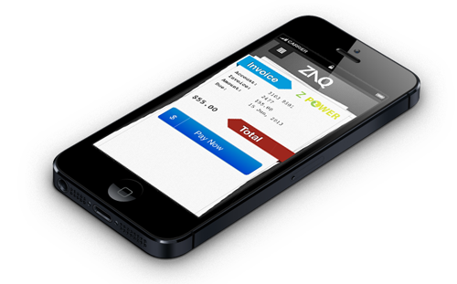
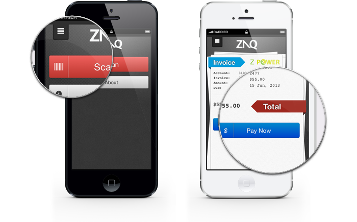

iPhone Application
ZAQ is an iPhone application created to make paying your bills easier, securely storing your payment information it allows users to simply scan their bills and pay them by entering their 4 digit pin. Built using a responsive HTML5 / CSS3 interface it automatically updates to the latest version on load. The backend was built using the PHP framework CodeIgniter.
Role: UX design, Back end architecture
Technologies: PHP, MySQL, CodeIgniter, Photoshop, HTML5, CSS3, Javascript
Creating the ZAQ brand was an extremely organic process, as a smartphone application the branding had to be extremely edgy but we wanted it to be minimal and not distract the consumer from the App itself. Using balance and powerful typography it gives a feeling of strength.
ZAQ is a simple and easy way to pay your bills on your phone, so I designed the ZAQ website to represent this simplicity. A one page parallax website with a clean look and feel, I used ZAQ's existing branding, textures and colors in the design to create a consistent feel between the application and website.
Role: Design & Implementation
Technologies: Photoshop, HTML5, CSS3, Javascript